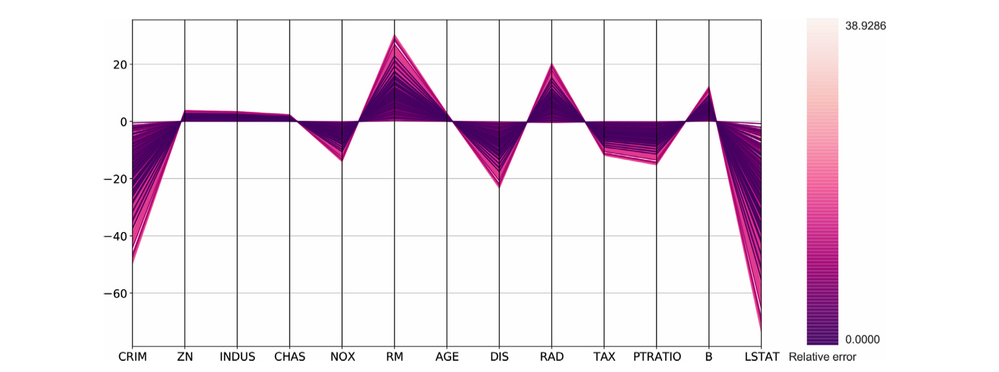
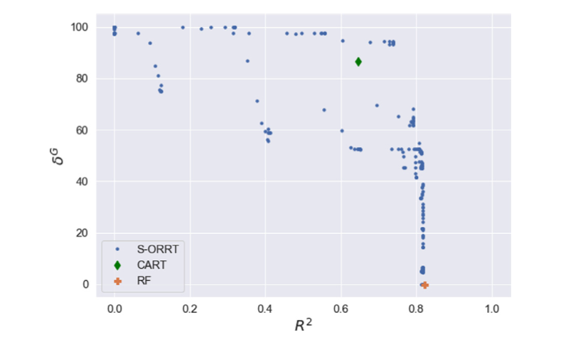

- 平均 \(R^2\) 0.6257（深さ 3）9 データでのテストの決定係数の平均。CART は 0.5105、OLS は 0.5017、LASSO は 0.5020。局所探索の ORT-H LS（0.6420）とランダムフォレスト（0.6946）には及ばない（論文 Table 4）。
- まばらさ 1% → 84%、0% → 52%Ailerons（40 変数、深さ 1）で、\(R^2\) をほぼ保ったまま、分岐ごとのまばらさと木全体のまばらさをここまで高められた。
- 公平性の制約Boston Housing で、守る集団と全体の平均予測の差を 1.2070 から 0 にした。二乗誤差の平均は 9.6462 から 11.2401 に増えた（論文 Table 1）。
混合整数最適化による最適な回帰木は個体ごとの整数変数をもち、データの次元が増えると計算が重くなる
最適な決定木を求める問題は NP 完全で、CART のような貪欲なヒューリスティックは最適でない木を返す。数理最適化で木を作ると、予測の精度が上がるだけでなく、木のすべての分岐にかかわる性質を扱いやすい。その代表が木全体で使う変数の数（大域的なまばらさ）で、CART やランダムフォレストは分岐ごとの変数の数（局所的なまばらさ）は制御しやすいが、木全体の変数の数は制御しにくい。
最適な回帰木はこれまで混合整数最適化で定式化されてきた（Bertsimas ら、Dunn、Verwer と Zhang）。これらは個体ごとの整数変数と変数ごとの整数変数をもつので、データの次元が増えると小さなデータでも計算の負担が大きい。局所探索（Dunn の ORT-H LS）で負担を減らす方法もあるが、木全体にかかわる性質は制御できない。この論文は個体に直接対応する決定変数のない連続最適化のモデルを使い、学習データの件数に対してスケールするようにする。
葉ごとの線形予測を到達確率で重みづけした予測の二乗誤差に、L1 と L∞ の罰則を加える
深さ \(D\) の木の分岐ノード \(t\) で、個体 \(i\) は確率 \(p_{it} = F(\boldsymbol a_{\cdot t}^\top \boldsymbol x_i / p - \mu_t)\) で左へ、残りの確率で右へ進む（\(F\) は連続微分可能な累積分布関数）。葉 \(t\) に着く確率 \(P_{it}\) は経路上の確率の積である。ORCT と違い、葉ごとに線形の予測 \(\varphi_{it} = \boldsymbol a_{\cdot t}^\top \boldsymbol x_i - \mu_t\) を置き、最終の予測をその確率つきの平均にする。
S-ORRT（Sparse Optimal Randomized Regression Tree）は、次の制約のない連続最適化問題を解く。第 1 項は学習データでの二乗誤差の平均、第 2 項は分岐と葉のすべての係数の L1 ノルムで分岐ごとの変数を減らし、第 3 項は変数 \(j\) の係数の最大値（L∞ ノルム）を罰するグループ罰則で、変数を木全体から外す。変数は分岐（斜めの分岐）にも葉（線形予測）にも現れるので、L∞ の罰則はその変数の係数を分岐と葉のすべてでまとめて縮める。
決定変数の数は個体の数 \(N\) によらない。\(N\) が増えると目的関数の評価には時間がかかるが、問題の大きさは変わらない。Sparse ORCT と同じく、\(a_{jt} = a_{jt}^+ - a_{jt}^-\) と分けて補助変数 \(\beta_j\) を置くと、なめらかな問題に書き直せる。
予測が入力についてなめらかなので、重要な集団の誤差や公平性の制約を入れられ、個体ごとの局所的な説明も偏微分で直接求まる
- コストを考慮した制約：重要な集団 \(J_j\) の二乗誤差の平均に上限 \(\rho_j\) を課す制約 \(\mathrm{MSE}(\boldsymbol a, \boldsymbol\mu; J_j) \le \rho_j\) を加えられる。
- 公平性：守るべき集団 \(S\) と全体 \(I\) の平均予測の差を \(C\) 以下にする制約などを加えられる。Boston Housing で、変数 B（黒人の人口の割合）が第 3 四分位を超える地区を \(S\) とすると、制約なし（\(\lambda^L = \lambda^G = 0\)）の差は \(C_0 = 1.2070\) だった。上限を \(C = \tau C_0\)（\(\tau = 0.75, 0.5, 0.25, 0\)）と厳しくすると、\(\tau = 0\) で 2 つの平均予測は一致し、二乗誤差の平均は 9.6462 から 11.2401 に増えた。
- 局所的な説明：予測は連続な予測変数についてなめらかなので、個体 \(\boldsymbol x^0\) での偏微分 \(\partial \Phi / \partial x_j(\boldsymbol x^0)\) が、各変数の予測への影響を個体ごとに表す。CART やランダムフォレストでは、連続の予測変数を少し変えても予測はまったく変わらない。LIME のような事後の汎用的な説明に頼らず、モデルから直接説明を得られる（図1）。

理論の面では、分岐の係数を固定すると葉の切片は最小二乗法で決まり、すべての係数が 0 のときの予測は全員について目的変数の平均になる（命題 1、系 1）。さらに、\(\lambda^L\) と \(\lambda^G\) が二乗誤差の勾配で決まるある値を超えると、すべての係数が 0 の木が停留点になる（命題 2）。
9 データで深さ 2・3 の S-ORRT の平均 \(R^2\) は CART・OLS・LASSO を上回り、ORT-H LS とランダムフォレストに少し及ばなかった
UCI の 9 データ（\(N\) は 506〜40,768、\(p\) は 10〜40）を 75% と 25% に分け、テストの決定係数 \(R^2\) を 10 回の平均で比べた。S-ORRT はロジスティック関数で \(\gamma = 512\)、罰則なし（\(\lambda^L = \lambda^G = 0\)）とし、scipy の SLSQP でランダムな初期値から 1,000 回解いた。1 つの初期値から解く時間は 0.01 秒（BH、深さ 1）〜2.08 秒（A と FA、深さ 3）である。比べたのは、深さを制限しない CART、OLS、LASSO、深さ 10 までの斜めの木を線形予測つきで局所探索する ORT-H LS（Dunn 2018 の値を引用）、ランダムフォレストである。
| CART | OLS | LASSO | ORT-H LS | RF | S-ORRT \(D=1\) | S-ORRT \(D=2\) | S-ORRT \(D=3\) | |
|---|---|---|---|---|---|---|---|---|
| 平均 \(R^2\) | 0.5105 | 0.5017 | 0.5020 | 0.6420 | 0.6946 | 0.5628 | 0.6205 | 0.6257 |
| 平均の順位 | 6.5 | 6.7 | 6.4 | 2.2 | 2.1 | 5.1 | 3.0 | 2.8 |
表1 9 データでのテストの \(R^2\) の平均と平均の順位（論文 Table 4、出版版）。
深さ 3 の S-ORRT は CART に対して最大 34 ポイント、OLS と LASSO に対して最大 24 ポイント \(R^2\) が高かった。ORT-H LS よりは平均で 2 ポイント低いが、CAr では同程度、RW では 6 ポイント高い。ランダムフォレストは全体で最も精度が高いが、S-ORRT は A と CAr で同程度、FA では最も高かった。深さ 1 でも、BH、RW、CA 以外の 6 データで CART、OLS、LASSO を上回った。論文は CART、ORT-H LS、ランダムフォレストと違い、まばらさ・コスト・公平性のような木全体の性質を直接制御できる点を S-ORRT の利点に挙げる。
Ailerons では予測の精度をほぼ保ったまま、分岐ごとのまばらさを 84%、木全体のまばらさを 52% まで高められた
Ailerons（7,153 件、40 変数）で、深さ 1 の S-ORRT を \(\lambda^L\) と \(\lambda^G\) の格子（0 と \(2^r\)、\(-12 \le r \le 5\) を変数の数などで割ったもの）で学習し、前の組の解を次の組の初期値にした。\(R^2\) が最も高いのは罰則なしのときに限らず、\(\lambda^L \le 2^{-2}/120\)、\(\lambda^G \le 2^{-4}/40\) の範囲では \(R^2\) がほぼ一定のまま、分岐ごとのまばらさ \(\delta^L\) が 1% から 84% に、木全体のまばらさ \(\delta^G\) が 0% から 52% に上がった。罰則をさらに強めると、まばらさは上がり続けるが \(R^2\) は下がる。

CART と比べると、いくつかの罰則の組で S-ORRT は予測の精度でも木全体のまばらさでも CART を上回った。ランダムフォレストとは予測の精度が同程度で、木全体のまばらさは 50% 改善した。スケールについては、25 変数の人工データで \(N\) を \(10^5\)、\(10^6\)、\(10^7\) と変え、CART より二乗誤差の平均が 30% 改善した解に達するまでの時間を測った。このシミュレーションでは、計算時間は \(N\) に対して線形の傾向を示した（論文 Fig. 5）。
確率的な分岐の最適な木を回帰に広げた研究で、葉に線形モデルを置き、得られる木は局所解である
- 何を最適にするか：深さ \(D\) を固定し、斜めの分岐の係数と葉の線形予測の係数を、二乗誤差の平均と 2 つの罰則の和で同時に決める。非凸な連続最適化を SLSQP で多数の初期値から解くので、得られるのは局所解であり、混合整数最適化と違って大域的な最適性は証明しない。
- 系譜：分類の ORCT が変種として示した回帰の木（ORRT。葉は定数）を、葉の線形予測と、Sparse ORCT の L1・L∞ の罰則と組み合わせた。論文の結論も、著者らが分類の木で提案した連続最適化の方法を回帰の木に広げたものとまとめている。
- 今後の拡張：葉の線形予測を一般化加法モデルのような非線形の関数に替えること、条件付きの分位点を推定して予測区間を得ること、まばらさを全体で制御しながら木の集まりを同時に解くバギングを挙げている。
@article{blanquero2022sparse,
title = {On sparse optimal regression trees},
author = {Blanquero, Rafael and Carrizosa, Emilio and Molero-R{\'\i}o, Cristina and Romero Morales, Dolores},
journal = {European Journal of Operational Research},
volume = {299},
number = {3},
pages = {1045--1054},
year = {2022},
doi = {10.1016/j.ejor.2021.12.022}
}
ページの記述・数値・図は出版版（CC BY-NC-ND のオープンアクセス。セビリア大学のリポジトリ idUS に置かれた出版社版の PDF）による。arXiv 版は見つからなかった。書誌情報は Crossref による（Crossref では 4 人目の著者の名と姓の区切りが「Dolores Romero / Morales」と登録されているが、論文の表記に合わせて姓を Romero Morales とした）。所属は出版版の表記。